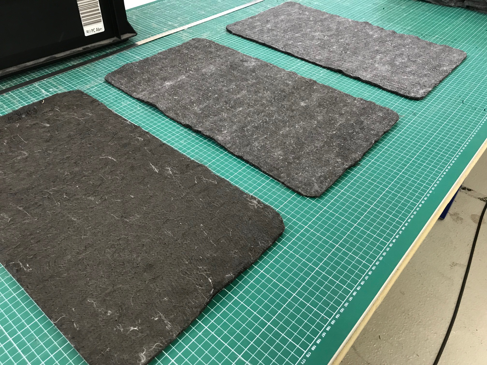
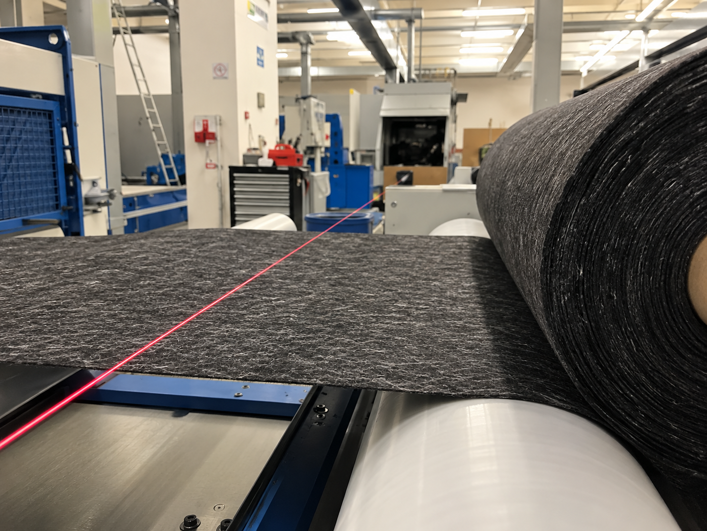

Can recycled carbon fibres improve the manufacturing of large composite structures?
Efficient resin infusion is particularly important for large composite structures such as wind-turbine blades and boat components, where long flow paths increase manufacturing time and process complexity. At the same time, recycling carbon-fibre waste remains a challenge because recovered fibres need suitable applications. My bachelor thesis investigated whether hybrid nonwovens containing recycled carbon fibres could address both challenges: improving permeability during resin infusion while becoming part of the final composite structure.

The problem
Liquid composite moulding depends on resin flowing through the reinforcement before curing. For large components, long flow paths can make the manufacturing process increasingly difficult to control.
Additional flow media can accelerate resin transport, but they are typically auxiliary materials that have to be removed after production. At the same time, recycled carbon fibres require new applications that make effective use of the recovered material.
The thesis therefore investigated a combined approach: using recycled carbon fibres in hybrid nonwovens that support resin flow during manufacturing and remain integrated in the final laminate.
Approach
Defined the material system
Selected and characterised the reinforcement and hybrid nonwoven configurations used for the experimental investigation.
Prepared test specimens
Manufactured different laminate configurations to compare the influence of the integrated nonwoven layer.
Measured resin flow
Investigated how the additional layer affected permeability and resin transport through the reinforcement.
Evaluated manufacturing behaviour
Compared the different configurations with regard to their potential influence on the infusion process.
Assessed integration into the laminate
Considered the possibility of leaving the nonwoven permanently inside the composite instead of using a removable auxiliary flow medium.

What was investigated
Permeability
How easily resin can flow through the reinforcement and how the integrated nonwoven changes the flow behaviour.
Nonwoven Parameters
How basis weight, needle-punch density, material composition and orientation influence permeability.
Recycled Carbon Fibres
Whether recycled carbon fibres can be incorporated into hybrid nonwovens and used as a functional material within composite manufacturing.
Process Integration
Whether the flow-enhancing layer can remain inside the laminate instead of being used only as an auxiliary manufacturing material.



Result
Basis weight showed the clearest influence on permeability. At a constant cavity height, lower basis weight resulted in a lower fibre volume fraction and increased permeability.
Other investigated parameters showed no measurable influence within the tested ranges. Changes in needle-punch density, material composition and orientation did not produce the expected differences, highlighting limitations in the experimental method and the need for further investigation.
Recycled carbon fibres offer an additional route for material reuse. Incorporating them into nonwoven structures creates a potential application in which recycled fibres can perform a manufacturing function rather than simply replacing virgin reinforcement.
The project connected material development with process engineering. The work combined recycled fibre materials, nonwoven manufacturing, permeability testing and critical evaluation of the experimental method.